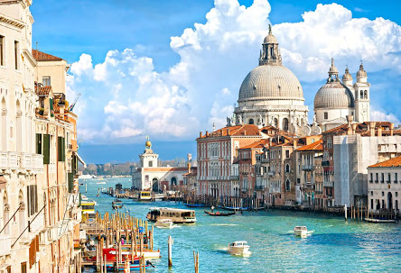
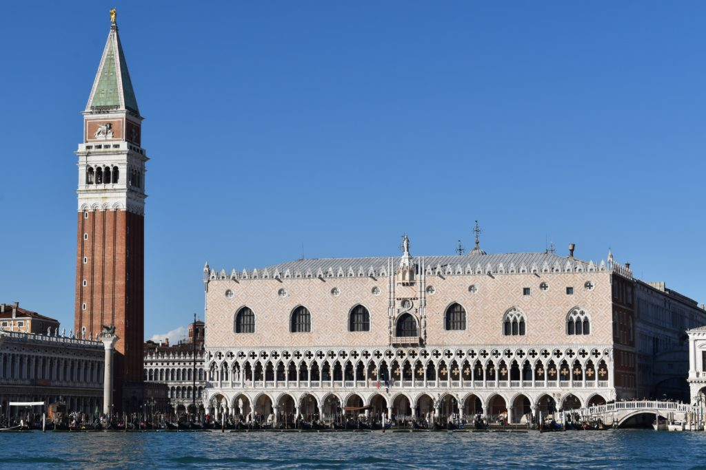
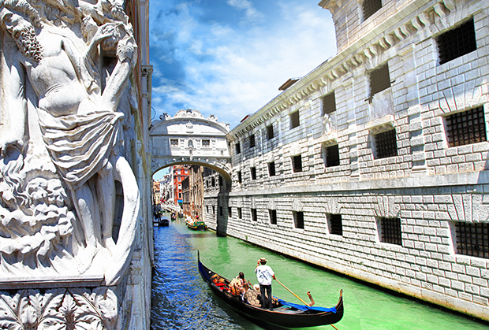

Cette place, la seule à mériter ce titre (piazza) à Venise, toutes les autres s'appelant campo, forme un quadrilatère irrégulier, bordé d'arcades et de monuments remarquables (notamment les Procuraties). Ses arcades abritent des cafés et des boutiques de tourisme dont le célèbre Caffè Florian de 1720 avec son orchestre symphonique en terrasse :.
Ce palais représente la plus grande œuvre d’imagination de Venise. Il est une réussite du mariage de l'art gothique et de l'art de la Renaissance dans un décor coloré qui dissout les surfaces (Architecture gothique vénitienne (en)). Pendant une longue série d’années, les meilleurs architectes dirigèrent sa construction, les meilleurs peintres sa décoration.
Le pont des Soupirs est l’un des monuments les plus emblématiques de Venise. Chargé d’histoire, il fascine les visiteurs par son architecture et les légendes qui l’entourent. Je vous raconte ici son histoire et vous donne tous les conseils pour pouvoir l’admirer et le visiter.
Notre site web a l'ambition de vous donner l'envie à vous aussi de visiter ces endroits uniques au monde.